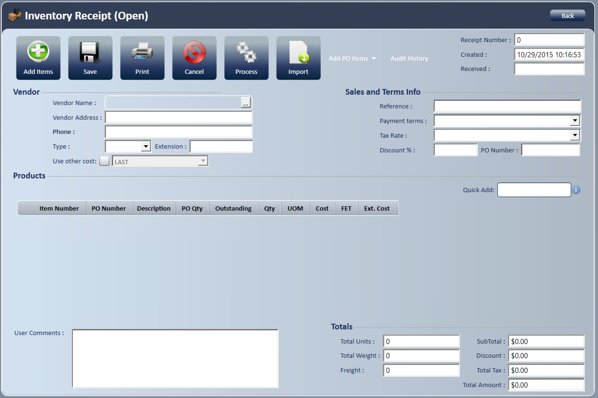
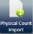
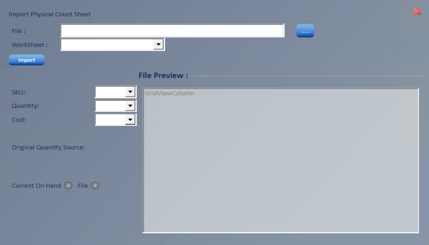

Inventory Receipt
Use an inventory receipt to receive product from a vendor into inventory.
Create an inventory receipt
- Go to New; Inventory Receipt.

- Choose the vendor in the Select Vendor window, which opens as soon as the new inventory receipt opens.
- Begin typing in Look For to narrow the search.
- Vendor information fills in from the vendor record.
- Enter a Reference. This field is required.
- A reference number already used on another inventory receipt for this vendor gives a warning. With the Inventory Receipt - Allow Duplicate Reference Numbers access right, you can choose to keep it. Without it, enter a different reference number.
- To use a date other than today, select the calendar next to Received. Requires the Inventory Receipt - Change Received Date access right.
- Verify the cost to use. The default cost is set in Manage; Company Setup; Company, on the Default Costs tab, which can set a different default cost for each document type and SkuType.
- To use a different cost, check Use Other Cost and select a cost from the dropdown.
- Add items using one of these four methods:
- Add Items : Enter items through the tire search screen.
- Quick Add: Enter items here if you know the item number.
- Separate the SKU, quantity and cost with a comma or plus sign . The whole line fills in at once, and you return to Quick Add, ready to add the next item.
- Receive from multiple PO's : Receive items from more than one purchase order.
- Choose items from multiple PO's: Enter an item number to see the POs the item is open on. Select the vendor, enter the manufacturer item number in the filter, then enter the quantity to receive and press Enter.
Note: Receipt lines show PO Qty, PO Outstanding, Qty Received and Qty Expected. Qty Expected can't be more than PO Outstanding (or PO Qty) or less than Qty Received, and can't be 0. Qty Received can't be more than Qty Expected. If your store turns on the System Setting Inventory Receipt - Populate Quantity Received, Qty Received fills in with the outstanding quantity. Otherwise it starts at 0.
-
-
- The item drops into the shopping cart, and the cursor returns to the filter field for the next item.
- When all items are in the cart, select .
- All items are added to the receipt.
- Add all items from a PO: Select one complete purchase order. Select the vendor, enter the PO number, and enter the quantity to receive for each line item.
- When all items are in the cart, select .
- All items are added to the receipt.
- Import

: Import items from a spreadsheet. A dialog box opens for you to fill in.
-

-
-
- Select the ellipsis (...) and choose the spreadsheet file to load.
- Select the worksheet to use from the Worksheet dropdown.
- Select the Sku column header to use from the preview.
- Select the quantity column header, typically the count column.
- Select the cost column, typically the average cost column.
- Set Original Qty. Source to on hand or file.
- If you select File, choose the column to use, typically the QOH column.
- Select Import.
- The items fill in on the inventory receipt.
- Verify the total adjustment quantity in TWHD matches the total quantity in the loading document.
-
- Select Save to assign a receipt number.
- You don't need to save if you're processing right away. The receipt saves automatically when you select Process.
- Select Process .
- A dialog box confirms the receipt processed successfully.
- If the receipt has items from more than one purchase order, Choose Process Type asks what to do with unreceived items: Process as is, Cancel unreceived items from the original PO, or Move unreceived items to new PO. Then select Continue Processing.
- Items with $0 cost ask you to confirm before processing.
- Select Print if you want.
Note: Inventory receipts can be created for items that are NOT marked inventoried in inventory maintenance. To stop non-inventoried items from being received, uncheck the access right in Manage; Access Rights.
Note: When your company uses two-step returns, processed receipts show Return and Vendor Credit buttons. See New Return and AP Invoices and Vendor Credits.